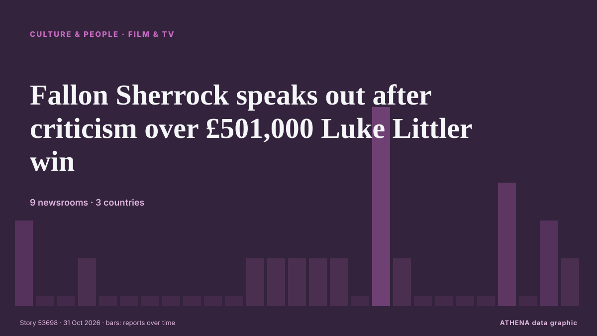

Fallon Sherrock speaks out after criticism over £501,000 Luke Littler win

The Netflix show saw Luke Littler take on a number of amateur contestants who were trying win £501,000. de Liverpool Echo
Informado de forma independiente por 9 medios de 3 países desde el 29 oct; el primero fue Evening Standard (London); la cobertura sigue extendiéndose. Deportes y cultura se archivan sin evaluación de riesgo. La confianza es del 83 % (alta): lo corroboran 9 medios independientes, con una fiabilidad media de las fuentes del 69 %. Medios por país: Reino Unido (16), Singapur (1), Nigeria (1). Cobertura: del 29 oct al 31 oct, 53 horas.
Qué ha cambiado: 14 informaciones nuevas de 8 redacciones en las 24 horas hasta el 31 oct.
Primer titular: When is Beat Luke Littler? Start time, how it works and prize money for Netflix special
Los titulares se muestran en inglés, tal como se publicaron.
De un vistazo
Seleccionado, puntuado y redactado por la metodología publicada de ATHENA. Ningún editor interviene en eventos concretos. Cómo se elabora ›
| 29 Oct 11:10 UTC | 2 |
|---|---|
| 29 Oct 13:10 UTC | 0 |
| 29 Oct 15:10 UTC | 0 |
| 29 Oct 17:10 UTC | 1 |
| 29 Oct 19:10 UTC | 0 |
| 29 Oct 21:10 UTC | 0 |
| 29 Oct 23:10 UTC | 0 |
| 30 Oct 01:10 UTC | 0 |
| 30 Oct 03:10 UTC | 0 |
| 30 Oct 05:10 UTC | 0 |
| 30 Oct 07:10 UTC | 0 |
| 30 Oct 09:10 UTC | 1 |
| 30 Oct 11:10 UTC | 1 |
| 30 Oct 13:10 UTC | 1 |
| 30 Oct 15:10 UTC | 1 |
| 30 Oct 17:10 UTC | 1 |
| 30 Oct 19:10 UTC | 0 |
| 30 Oct 21:10 UTC | 5 |
| 30 Oct 23:10 UTC | 1 |
| 31 Oct 01:10 UTC | 0 |
| 31 Oct 03:10 UTC | 0 |
| 31 Oct 05:10 UTC | 0 |
| 31 Oct 07:10 UTC | 0 |
| 31 Oct 09:10 UTC | 3 |
| 31 Oct 11:10 UTC | 0 |
| 31 Oct 13:10 UTC | 2 |
| 31 Oct 15:10 UTC | 1 |
Por qué estas cifras
Importancia
Riesgo
Confianza
La cobertura: quién informó y cuándo
titular tal como se publicó · abre el original- Evening Standard (London) · Reino UnidoWhen is Beat Luke Littler? Start time, how it works and prize money for Netflix special
- WalesOnline · Reino UnidoWelsh darts player, 14, to face Luke Littler live on Netflix for £500k prize
- Yorkshire Post · Reino Unido'Beat Luke Littler' - Yorkshire soldier and a civil servant aiming to topple darts king for half a million
- Evening Standard (London) · Reino UnidoWorld youth champion to bin men: 'Beat Luke Littler' contestants in full for Netflix darts show
- Manchester Evening News · Reino UnidoNetflix’s Beat Luke Littler in Manchester tonight: First look and how live darts event will work
- WalesOnline · Reino UnidoHow to watch Beat Luke Littler on TV tonight: Start time, stream and prize money
- WalesOnline · Reino UnidoLuke Littler's huge net worth, warning to girlfriend and Netflix show accusation
- Sky Sports · Reino UnidoWINNING MOMENT! Sherrock beats Littler to claim £501,000 prize!
- WalesOnline · Reino UnidoLuke Littler beaten live on Netflix as Fallon Sherrock wins £501,000 prize
- Evening Standard (London) · Reino UnidoBeat Luke Littler: The Nuke hints at sequel event as emotional Fallon Sherrock claims huge Netflix prize
- WalesOnline · Reino UnidoFallon Sherrock's Netflix controversy, split from darts star and net worth now
- CNA (Channel NewsAsia) · SingapurDarts-Sherrock stuns Littler to win Netflix darts jackpot
- WalesOnline · Reino UnidoFallon Sherrock row erupts as accustation denied after £501,000 Luke Littler win
- Sky Sports · Reino UnidoSherrock 'happy to overcome hate' after lucrative Littler win
- The Guardian · Reino UnidoFallon Sherrock pulls off shock defeat of world darts No 1 Luke Littler in live TV battle
- Manchester Evening News · Reino UnidoLuke Littler darts row breaks out as Fallon Sherrock hits back after £501K Netflix win
- Liverpool Echo · Reino UnidoFallon Sherrock speaks out after criticism over £501,000 Luke Littler win
- Punch · NigeriaSherrock stuns world champion Littler to win £501,000